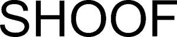

Trade Mark Journal No.2025/030 25 July 2025
WO0000001846714 (5,7,8,9,10,20,21,35)
Office of origin: New Zealand
Date of International Registration:23 October 2024
Date of designation in the UK:
23 October 2024

International priority date claimed: 7 October 2024
(New Zealand)
(1275421)
- Class 5
- Veterinary preparations; veterinary substances including high density foam impregnated with copper sulphate or other chemicals and disinfectants; plasters, materials for dressings; medicated drenches for animals; disinfectants; pesticides; preparations for destroying and repelling vermin; fungicides and herbicides; antiparasitic collars for animals; animal feed supplements for veterinary use; protein supplements for animals; vitamin supplements for animals; dietary supplements for animals; cement for animal hooves; eyepatches for veterinary treatment.
- Class 7
- Machines namely milking machines for livestock, including portable milking machines and feeding machines for animals; machine tools; tail trimmers and hair trimmers for animals (machines); shearing and trimming machines for animals; mechanised feeders for animals; parts and accessories for the foregoing in this class.
- Class 8
- Hand tools and implements (hand-operated); cutters; blades for trimming and shearing; razors; agricultural hand tools and hand-operated implements; agricultural hand tools and hand-operated implements, namely hair trimmers and tail trimmers for animals (electric and non-electric hand implements), hair cutters for animals, blades for trimming and shearing animals, razors for animals; ear piercing instruments, including ear pliers for livestock and ear tag applicators for livestock; cattle marking tools; branding irons; cattle prods, electric; stable forks for cleaning stables and livestock bedding; parts and accessories for the foregoing in this class.
- Class 9
- Protective clothing, footwear, headgear and eyewear against accidents and injury; electronic identification tags; electronic readers; electronic animal identification apparatus; computer software (including computer applications) and hardware (including mobile hand held smart devices) for monitoring and operating animal management systems, electric fences and equipment; electronic identification apparatus and equipment; radio-frequency identification [rfid] readers and antennas; electric fences, electric fence controllers, electric fence energisers, mains operated electric fence energisers; solar powered energisers; components for electric fences; electrical apparatus for use with electric fences to measure voltage levels, detect polarity, and monitor current flow direction; voltmeters; switching and measuring apparatus and instruments for switching currents or voltages, measuring voltage magnitudes and measuring current magnitudes; weighing apparatus and instruments; electronic monitoring apparatus and instruments, including apparatus and instruments for checking weights and reading information on radio-frequency identification [rfid] tags, including structural and replacement parts therefor; measuring buckets; electronic animal identification apparatus; biometric identification systems; data processing systems; electronic publications.
- Class 10
- Veterinary apparatus and instruments; veterinary apparatus for treating hooves; therapeutic hoof protectors for animals for treatment of damaged or diseased hooves; synthetic plastic and medicated protective boots for bovine and equine hooves; therapeutic pads and soles for animal hooves; medicated and therapeutic shoes for animals; medical instruments and equipment for treating hooves, namely, synthetic plastic and protective socks and boots for bovine and equine hooves, mattresses and trimmers; supportive bandages; nursing bottles for animals; teats for nursing bottles for animals; veterinary apparatus for dehorning and debudding animals; medical splints and ropes for bovine and equine animals; slings, straps and lifters for medical purposes for animals; drench bottles, drenchers for administering medications to livestock; stomach feeder kits for animals including syringes and feeding tubes; apparatus for trimming animal tails and hair for medical purposes, namely trimmers; mastitis testing apparatus for bovine and equine animals, namely collection devices for collecting milk samples; disinfecting mattresses for veterinary and medical purposes.
- Class 20
- Identification bands, not of metal; identification tags (not of metal) including plastic ear tags for animals; leg markers for animals in the nature of non-metallic tags and bands; neck markers for animals in the nature of non-metallic tags and bands; ear tags, not of metal; animal crates.
- Class 21
- Animal activated animal feeders; animal feed bottles; buckets; animal feed buckets; animal activated livestock feeders; animal activated livestock waterers; feeding troughs; feeding vessels for livestock; horse grooming gloves; animal brushes; animal combs; animal brushes, including mounted brushes for livestock to rub against; combs for animals.
- Class 35
- Wholesale and retail services relating to products used in agriculture, horticulture, farming, animal handling and veterinary and medical treatment namely veterinary preparations, veterinary substances including high density foam impregnated with copper sulphate or other chemicals and disinfectants, plasters, materials for dressings, medicated drenches for animals, disinfectants, pesticides, preparations for destroying and repelling vermin, fungicides and herbicides, antiparasitic collars for animals, animal feed supplements for veterinary use, protein supplements for animals, vitamin supplements for animals, dietary supplements for animals, cement for animal hooves, eyepatches for veterinary treatment, machines namely milking machines for livestock, including portable milking machines and feeding machines for animals, machine tools, tail trimmers and hair trimmers for animals (machines), shearing and trimming machines for animals, mechanised feeders for animals, parts and accessories for the foregoing, hand tools and implements (hand-operated), cutters, blades for trimming and shearing, razors, agricultural hand tools and hand-operated implements, agricultural hand tools and hand-operated implements, namely hair trimmers and tail trimmers for animals (electric and non-electric hand implements), hair cutters for animals, blades for trimming and shearing animals, razors for animals, ear piercing instruments, including ear pliers for livestock and ear tag applicators for livestock, cattle marking tools, branding irons, cattle prods, electric, stable forks for cleaning stables and livestock bedding, parts and accessories for the foregoing, protective clothing, footwear, headgear and eyewear against accidents and injury, electronic identification tags, electronic readers, electronic animal identification apparatus, computer software (including computer applications) and hardware (including mobile hand held smart devices) for monitoring and operating animal management systems, electric fences and equipment, electronic identification apparatus and equipment, radio-frequency identification [rfid] readers and antennas, electric fences, electric fence controllers, electric fence energisers, mains operated electric fence energisers, solar powered energisers, components for electric fences, electrical apparatus for use with electric fences to measure voltage levels, detect polarity, and monitor current flow direction, voltmeters, switching and measuring apparatus and instruments for switching currents or voltages, measuring voltage magnitudes and measuring current magnitudes, weighing apparatus and instruments, electronic monitoring apparatus and instruments, including apparatus and instruments for checking weights and reading information on radio-frequency identification [rfid] tags, including structural and replacement parts therefor, measuring buckets, electronic animal identification apparatus, biometric identification systems, data processing systems, electronic publications, veterinary apparatus and instruments, veterinary apparatus for treating hooves, therapeutic hoof protectors for animals for treatment of damaged or diseased hooves, synthetic plastic and medicated protective boots for bovine and equine hooves, therapeutic pads and soles for animal hooves, medicated and therapeutic shoes for animals, medical instruments and equipment for treating hooves, namely, synthetic plastic and protective socks and boots for bovine and equine hooves, mattresses and trimmers, supportive bandages, nursing bottles for animals, teats for nursing bottles for animals, veterinary apparatus for dehorning and debudding animals, medical splints and ropes for bovine and equine animals, slings, straps and lifters for medical purposes for animals, drench bottles, drenchers for administering medications to livestock, stomach feeder kits for animals including syringes and feeding tubes, apparatus for trimming animal tails and hair for medical purposes, namely trimmers, mastitis testing apparatus for bovine and equine animals, namely collection devices for collecting milk samples, disinfecting mattresses for veterinary and medical purposes, identification bands, not of metal, identification tags (not of metal) including plastic ear tags for animals, leg markers for animals in the nature of non-metallic tags and bands, neck markers for animals in the nature of non-metallic tags and bands, ear tags, not of metal, animal crates, animal activated animal feeders, animal feed bottles, buckets, animal feed buckets, animal activated livestock feeders, animal activated livestock waterers, feeding troughs, feeding vessels for livestock, horse grooming gloves, animal brushes, animal combs, animal brushes, including mounted brushes for livestock to rub against, combs for animals; including all such services provided via a distributor; provision of an online marketplace for buyers and sellers of goods and services; provision and dissemination of commercial information; presentation of goods on communication media, for retail purposes; administrative processing of purchase orders; farm business management services; advisory, consultancy and information in relation to the aforesaid services, including the provision of the aforesaid services online via a website, the internet or other computer networks.
Shoof International Limited
Representative: Stobbs, Building 1000, Cambridge Research Park Cambridge CB25 9PD UNITED KINGDOM